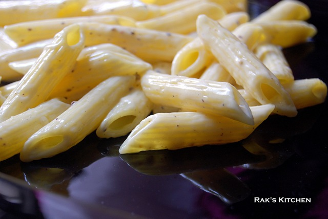

Home
Cheese Pasta

Description
Cheesy pasta is a broad category of comfort food featuring tender pasta shapes coated in a rich, creamy sauce made from melted cheese, butter, milk, or cream. These dishes range from quick stovetop preparations to baked casseroles, often enhanced with herbs, spices, vegetables, or proteins like chicken or bacon for added flavor and texture.
Ingredients
- Pasta of your choice
- Butter
- Cheese spread
- Pepper, crushed lily coarsely
- Olive Oil / Cooking Oil
- Salt
- Milk
Steps
- Cook pasta with salt, till soft or al dente, as per the packing instructions in the package. If you want the pasta to get cooked soon,soak in water for 1 hr and then cook.
- Drain the water and keep aside. Heat a broad pan and add the butter and just melt it in low flame. Add the cooked pasta and stir in the cheese and pepper.
- Use Amul cheese spread or any cheese spread of your like. Put pepper if your cheese spread don't have it.
- Mix well till the cheese melts and blends well with the pasta. If you want bit saucey, you can add milk and mix. Make sure you use boiled cooled milk. Do not do it in high flame. Better switch off flame, mix and then heat in low flame if needed.